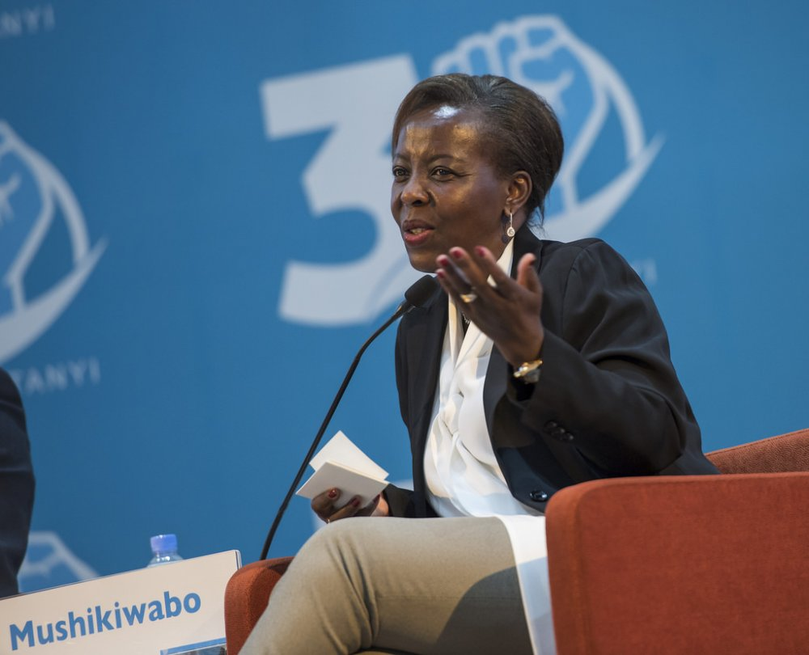

Michelle Obama: Advocate, Author, and Leader

Michelle Obama, an accomplished lawyer, author, and advocate, served as the First Lady of the United States from 2009 to 2017.
Renowned for her grace, intelligence, and dedication to public service, she championed key initiatives such as Let’s Move!,
which addressed childhood obesity, and Reach Higher, promoting higher education among young people. Her advocacy for military families
through Joining Forces, co-led with Dr. Jill Biden, underscored her commitment to service members and their families.
Michelle Obama also became a bestselling author with her memoir, *Becoming*, inspiring millions globally with her personal story
and reflections on resilience, leadership, and equality.
Oprah Winfrey: A Media Icon and Philanthropist
Oprah Winfrey, a global media mogul, philanthropist, and actress, is one of the most influential figures in modern history.
Rising from a challenging childhood, she became the first African American woman to own a major production company, Harpo Productions.
As the host of *The Oprah Winfrey Show*, the highest-rated talk show in television history, she redefined daytime TV with her empathetic
approach and focus on self-improvement, health, and social issues. Beyond media, Oprah is a passionate philanthropist, founding the
Oprah Winfrey Leadership Academy for Girls in South Africa and donating millions to education and disaster relief efforts.
Her impact transcends entertainment, symbolizing empowerment and perseverance worldwide.
Malala Yousafzai: Champion for Girls’ Education
Malala Yousafzai is a global advocate for girls’ education and the youngest-ever recipient of the Nobel Peace Prize.
Born in Pakistan’s Swat Valley, she began speaking out against the Taliban’s restrictions on education at a young age.
In 2012, Malala survived an assassination attempt by the Taliban, which sought to silence her activism. Undeterred,
she co-founded the Malala Fund to champion access to education for girls worldwide, especially in marginalized communities.
Her memoir, *I Am Malala*, became an international bestseller, amplifying her voice as a symbol of courage and resilience.
Malala continues to inspire millions, advocating for equality and education through her work and platform.
Sandrine Umutoni has served as the Minister of State for Youth since 22 August 2023.
Prior to that, she served for 7 years as the Director General at the Imbuto Foundation – a non-governmental organization founded
in 2001 by the First Lady of Rwanda, H.E. Jeannette Kagame, to contribute to the development of a healthy, educated, and
prosperous Rwandan society. Sandrine Umutoni’s educational achievements include a B.A. in International Relations and
an M.A. in French Studies. Her passion for community development and advocacy for literature and arts continue to inspire many.
Jeannette Kagame: Humanitarian and Advocate

Jeannette Kagame, the First Lady of Rwanda since 2000, is a dedicated advocate for health, education, and social welfare.
As the founder of the Imbuto Foundation, she has championed initiatives to improve maternal and child health, promote youth empowerment,
and support access to education, especially for girls. Her leadership in HIV/AIDS awareness has helped reduce stigma and
improve care for affected families, making a significant impact on Rwanda's development and inspiring global action.
Louise Mushikiwabo: Diplomat and Cultural Advocate

Louise Mushikiwabo, born on May 22, 1961, is the Secretary General of the Organisation internationale de la Francophonie (OIF),
first elected in 2018 and re-elected in 2022. A former Rwandan Minister of Foreign Affairs (2009–2018) and Information (2008–2009),
she played key roles in diplomacy, media regulation, and government communication. Mushikiwabo’s life reflects her commitment to
cultural preservation, global collaboration, and advocating for Rwanda's resilience and transformation.